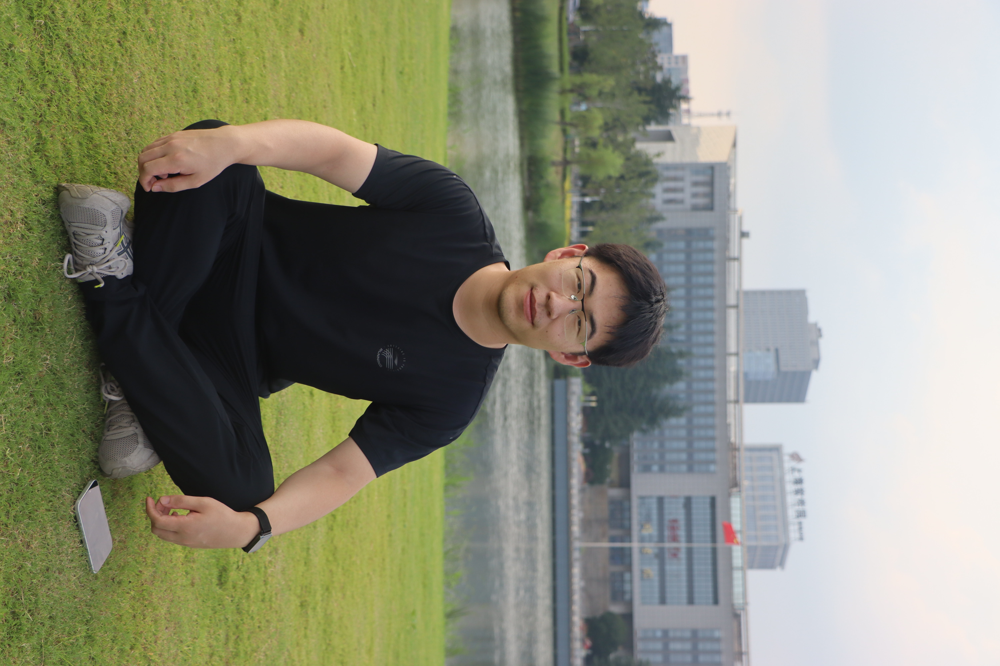
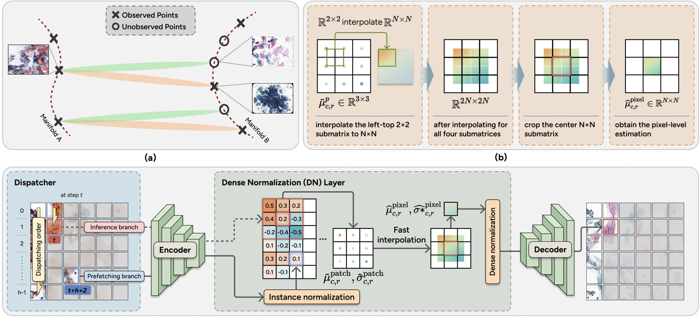
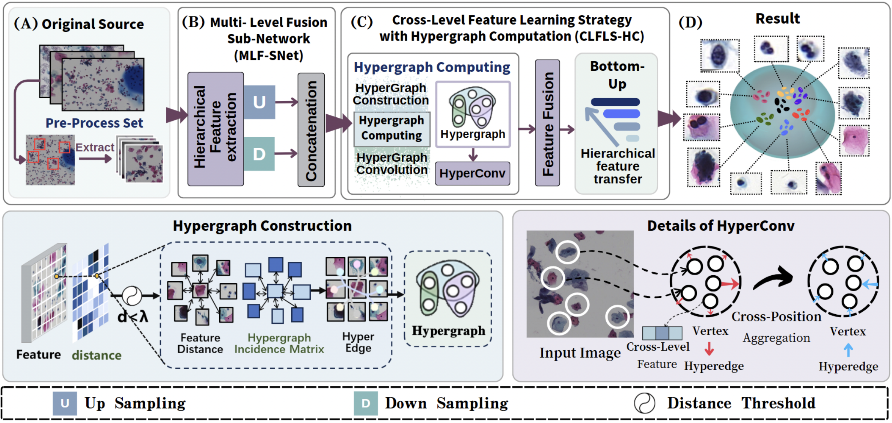
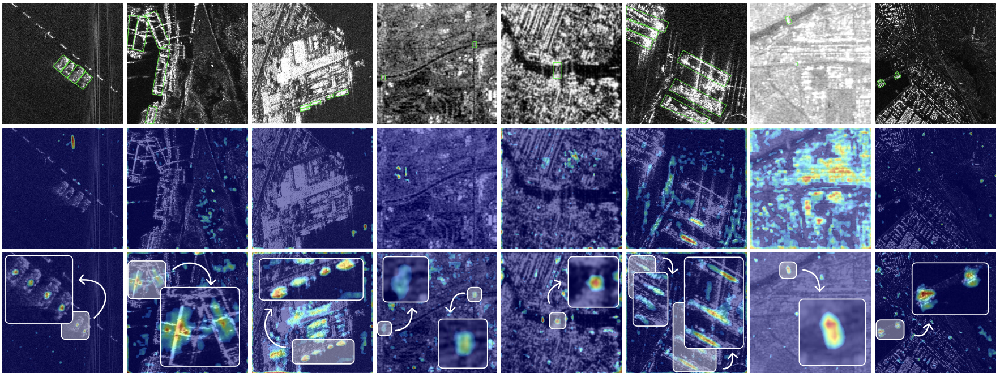

 |
Jincheng Li 理锦诚StudentAffiliation: Department of Artificial Intelligence and Computer Science, Nantong University, ChinaCurrent Address: 9 Seyuan Road, Nantong, China Email: 2330110412@stmail.ntu.edu.cn Orcid • GitHub |
Biography
- Introduction
- Education Background
- 2023.09-2027.06 • B.E. Degree • Supervisor: Prof. Lili Zhao.
-
I was born and raised in Nanjing, China. Currently, I am pursuing a bachelor's degree at School of Artificial Intelligence and Computer Science, Nantong University, and I am fortunate to be supervised by Associate Professor Yuehua Li and Lecturer Lili Zhao.
I’m currently focused on Medical Image Analysis, MLLM and Agentic AI.
Computer Science and Technology, Nantong University, China
News
Representative Publications
-
* indicates corresponding authorship and † indicates equal contribution.
Computational Pathology
 |
Jincheng Li†, Yuzhi He†, Yihui Zhan, Minye Shao, Yifei Sun, Zelin Liu, Lichi Zhang and Lili Zhao* Two-stage Cross-domain Cervical Abnormality Screening with Cytopathological Image Synthesis and Knowledge Distillation arXiv preprint arXiv:2606.27678. [Paper] |
 |
Jincheng Li, Danyang Dong, Menglin Zheng, Jinbo Zhang, Lichi Zhang, and Lili Zhao* High-precision Mixed Feature Fusion Network using Hypergraph Computation for Cell Detection arXiv preprint arXiv:2508.16140. [Paper] |
Multimodal Learning
 |
Yihui Zhan, Jincheng Li, Yuanyuan shen, and Xing xie* Spectral-Spatial Synergistic Learning and Context-Aware Edge Enhancement for Efficient Oriented Object Detection in SAR Images. |
Awards and Honors
- [2025.12] • "RuiHua" NTU Top 10 Outstanding Student Award (CNY 10,000.00)
- [2025.07] • China International College Students' Innovation Competition (Provincial Gold Medal)
- [2025.04] • RoboMaster College Students' Robotic Competition (National Bronze Medal)
- [2024.08] • Chinese College Students' Electric Competition (Provincial Sliver Medal)
- [2025.07] • Chinese College Students' Computer Design Competition (National Sliver Medal)
Academic Communities
- Student Member
- MICCAI 2025~
- CAAI 2026~
- Conference Review
- MICCAI 2026
- PRCV 2026
- Journal Review
- ESWA/EAAI/JoSC
Academic Activities
- 7-9 May 2026: VALSE 2026, Wuhan, China (Attend)
- 23-27 September 2025: MICCAI 2025, Daejeon, Korea (Poster)
- 13 September 2025: MICS, Online (Oral)
Acknowledgement: This page is based on this template
by Yicheng Wu